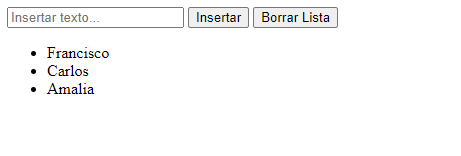

Enunciado
A continuación, deberá crear un documento HTML que contenga un campo de texto tipo input, un botón que se llame Insertar y un botón que se llame Borrar Lista. Aparte, deberá crear un documento JavaScript donde deberá darle a los elementos el siguiente comportamiento:
- En el input deberá aparecer un texto por defecto que diga Insertar texto…
- Cuando el usuario escriba un texto en el input y le dé al botón Insertar, el texto se deberá insertar abajo como una lista no ordenada. El campo input deberá quedar vacío.
- Si el usuario no escribe ningún texto y pulsa el botón Insertar, deberá salir una alerta que diga que el campo no puede estar vacío.
- Si el usuario pulsa el botón borrar lista, todo lo que haya escrito en la lista deberá desaparecer.
- Compruebe la funcionalidad del script en la web.
El resultado deberá ser el siguiente:
Actividad asociada al CE1.2, CE1.5 y CE1.7
CE1.2 Reconocer la sintaxis del lenguaje de guion que describen las estructuras de programación en la elaboración de scripts, de acuerdo a las especificaciones técnicas del lenguaje.
CE1.5 Citar las instrucciones proporcionadas por el lenguaje de guion para realizar operaciones de entrada y salida de datos, de acuerdo a las especificaciones técnicas del lenguaje.
CE1.7 Interpretar scripts que resuelvan un problema previamente especificado:
- Identificar el tipo y el uso de los datos declarados dentro del script.
- Describir las estructuras de programación utilizadas para organizar las acciones del programa.
- Reconocer las instrucciones proporcionadas por el lenguaje de script utilizadas en las operaciones de manipulación, entrada y salida de datos.
- Insertar el script dentro de la página web utilizando las etiquetas apropiadas.
- Probar la funcionalidad del script utilizando un navegador.
- Detectar y corregir los errores de sintaxis y de ejecución.
- Documentar los cambios realizados en el script.
Resultado
Actividad asociada al CE1.2
- Declaración de variables:
Se pueden declarar variables utilizando palabras clave como var, let o const, seguidas del nombre de la variable.
var edad = 25; - Estructuras de control condicional:
Sirven para tomar decisiones en función de condiciones.
- Ejemplo de una estructura if (si):
if (condicion) { // Código a ejecutar si la condición es verdadera } else { // Código a ejecutar si la condición es falsa } - Ejemplo de una estructura switch (caso):
switch (valor) { case 1: // Código a ejecutar si el valor es 1 break; case 2: // Código a ejecutar si el valor es 2 break; default: // Código a ejecutar si el valor no coincide con ningún caso }
- Ejemplo de una estructura if (si):
- Bucles:
Los bucles permiten repetir una porción de código múltiples veces.
- Ejemplo de un bucle for (para):
for (var i = 0; i < 5; i++) { // Código a ejecutar en cada iteración } - Ejemplo de un bucle while (mientras):
while (condicion) { // Código a ejecutar mientras la condición sea verdadera }
- Ejemplo de un bucle for (para):
- Funciones:
Las funciones permiten agrupar bloques de código reutilizables y ejecutarlos cuando sea necesario.
Ejemplo de una función:
function saludar(nombre) { console.log("¡Hola, " + nombre + "!"); } saludar("Juan"); // Llamada a la función saludar con el argumento "Juan"
Actividad asociada al CE1.5
Para solicitar datos de entrada al usuario, se puede usar la función prompt() que muestra una ventana emergente con un campo de entrada de texto. El usuario puede ingresar datos y hacer clic en "Aceptar" para confirmar la entrada. Por ejemplo:
var nombre = prompt("Introduce tu nombre:");Para mostrar datos de salida al usuario, se puede utilizar la función alert() que muestra una ventana emergente con un mensaje. Por ejemplo:
var mensaje = "Hola, mundo!";
alert(mensaje);var nombre = "Juan";
var edad = 25;
console.log(`El nombre es ${nombre} y la edad es ${edad}`);Actividad asociada al CE1.7
-
Identificación del tipo y uso de los datos declarados dentro del script:
- En el script, se declaran variables para almacenar referencias a elementos del DOM, como textoInput, formulario, borrarBtn y lista. Estos son de tipo HTMLElement.
- Además, se utiliza la variable texto para almacenar el valor del texto ingresado por el usuario. Es de tipo string.
- El texto se inserta en la lista como elementos de lista (<li>).
-
Descripción de las estructuras de programación utilizadas para organizar las acciones del programa:
- Se utiliza una clase ListaTexto para encapsular la funcionalidad del script.
- El constructor de la clase inicializa las variables y establece los manejadores de eventos para el formulario y el botón de borrado.
- Se utiliza la estructura de una clase para organizar los métodos insertarTexto y borrarLista.
- Los métodos están definidos dentro de la clase y se accede a las variables y elementos del DOM a través de la instancia de la clase.
-
Reconocimiento de las instrucciones proporcionadas por el lenguaje de script utilizadas en las operaciones de manipulación, entrada y salida de datos:
- Se utiliza document.getElementById() para obtener referencias a elementos del DOM.
- Se utiliza addEventListener() para establecer los manejadores de eventos.
- Se utiliza event.preventDefault() para evitar que el formulario se envíe y la página se recargue.
- Se utiliza value para obtener el valor del campo de texto.
- Se utiliza textContent para establecer el contenido de los elementos de lista.
- Se utiliza appendChild() para agregar elementos de lista a la lista existente.
- Se utiliza alert() para mostrar una alerta en caso de que el campo esté vacío.
-
Inserción del script dentro de la página web utilizando las etiquetas apropiadas:
- El script JavaScript se inserta dentro de la etiqueta <script></script>. Puede colocarse en la sección <head> o en la sección <body> del archivo HTML, dependiendo de los requisitos.
En este caso lo inserto en el head <script src="js/scriptCPT2.js" defer></script>
defer se usa para que el script cargue de manera asíncrona y se ejecute después de cargar la página
- El script JavaScript se inserta dentro de la etiqueta <script></script>. Puede colocarse en la sección <head> o en la sección <body> del archivo HTML, dependiendo de los requisitos.
-
Prueba de la funcionalidad del script utilizando un navegador:
- El script se ejecutará cuando se cargue la página en un navegador web compatible. Se puede probar ingresando texto en el campo de texto y haciendo clic en el botón "Insertar" para ver cómo se agrega a la lista. También se puede probar el botón "Borrar Lista" para eliminar todos los elementos de la lista.
-
Detección y corrección de errores de sintaxis y de ejecución:
- Es importante revisar la consola del navegador para verificar si hay errores de sintaxis o de ejecución en el script. Si se encuentran errores, se deben corregir para asegurarse de que el script funcione correctamente.
-
Documentación de los cambios realizados en el script:
- Es recomendable documentar cualquier cambio realizado en el script, especialmente si se modifica la funcionalidad original o se agregan nuevas características. Esto facilitará la comprensión y el mantenimiento del código en el futuro.